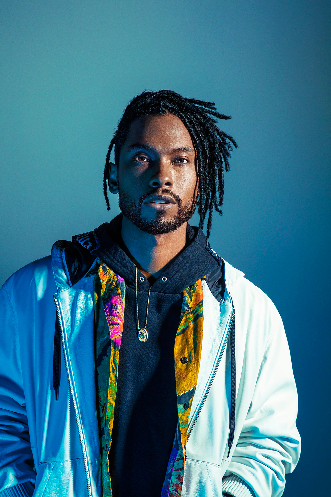
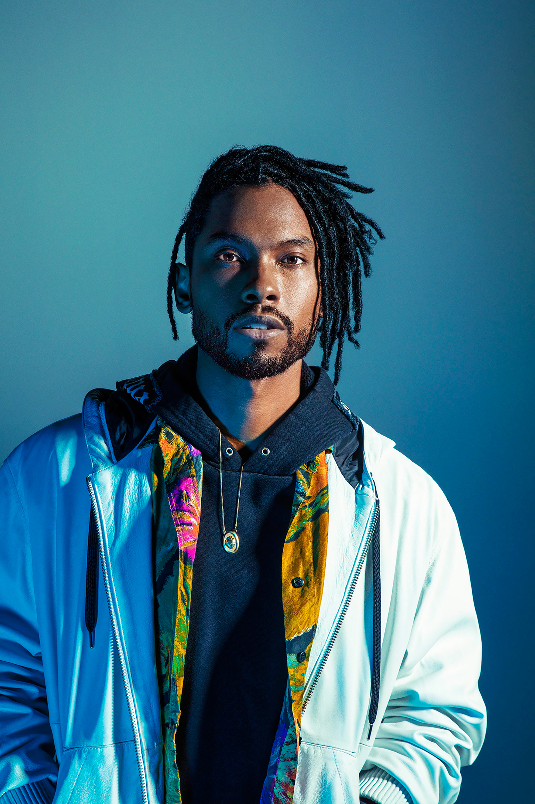

Miguel was born as Miguel Jontel Pimentel in San Pedro, California on October 23rd, 1985.
He began writing music at the age of thirteen, and signed his first music contract
in 2004. He gained popularity with his 2010 album release of All I Want Is You.
His 2012 record Kaleidoscope Dream received critical acclaim with the song "Adorn,"
in which he won a 2013 Grammy Award for best R&B song.
HISTORY :
EARLY LIFE
Miguel was born to a Mexican-American father and African-American mother, his parents divorced when
he was eight years old. After which, he and his brother lived primarily with his mother. Growing up
Miguel listened to R&B, funk, hip hop, rock and jazz, mainly due to his parents' diverse taste in
music. By the age of fourteen, he was writing and recording his own songs.
In 2004 he was signed to independent record label Black Ice, he completed his first studio
album, Young & Free in 2006. The label only released his single "Get Your Hands Up"
from the album. With its poor release, Miguel left Black Ice, and has since said the experience
taught him to take control of the way his music is marketed.
In 2007, Miguel signed with Jive Records and released his next album All I Want Is You.
However due to breach of contract with Black Ice, the album was not released for several years
pending a lawsuit. November 2010 was the official release of the new album. Sales began slow
but as the radio played singles "Quickie" and "Sure Thing," All I Want Is You eventually
spent 45 weeks on the Billboard charts and sold more than 400,000 copies in the US.
KALEIDOSCOPE DREAM
In 2011 RCA took over Jive Records and many of their artists, including Miguel. miguel
recorded his album Kaleidoscope Dream and released it in October 2012. The album
became a huge success, debuting at number 3 on the Billboard 200 charts. The single "Adorn"
made large sales and critical acclaim, and has been compared to Marvin Gaye's "Sexual Healing,"
with its sensual tone and easy pace. In 2013 "Adorn" won the Grammy for Best R&B song and Miguel
won the Soul Train Music Award for best R&B/soul male artist. He also received numerous
nominations throughout the year.
2014–PRESENT: WILDHEART, WAR & LEISURE, AND TE LO DIJE
In 2014 Miguel released a three track EP titled NWA.HollywoodDreams.Coffee
in promotion of his album release of Wildheart. Miguel officially released his third studio album
titled Wildheart on June 30, 2015. The album was nominated for a Grammy in the category of Best Urban
Contemporary Album. The single "Coffee" was also nominated for Best R&B Song that same year.
In 2016 Miguel partnered with Revolve Impact and headlined the Schools Not Prisons tour, to spread
awareness about mass incarceration in California. He filmed his music video for "Now" in Adelanto, where
Adelanto Detention Center is located. The center is the largest immigration processing center in California.
In an interview with Rollingstone Magazine, Miguel expressed his advocacy on corruption and abuse in the
immigration system with detained immigrants.
Miguel's fourth album War & Leisure was released in 2017. Miguel said the album has political
undertones. He also sang a duet with Natalia Lafourcade on the soundtrack of the Disney movie Coco.
He also sang the song live at the 2018 Oscars. In 2019 Miguel released a spanish EP called Te Lo Dije.
It has peaked at number 11 on the Top Latin Albums chart. This is the first entry Miguel has had in this genre.
 
